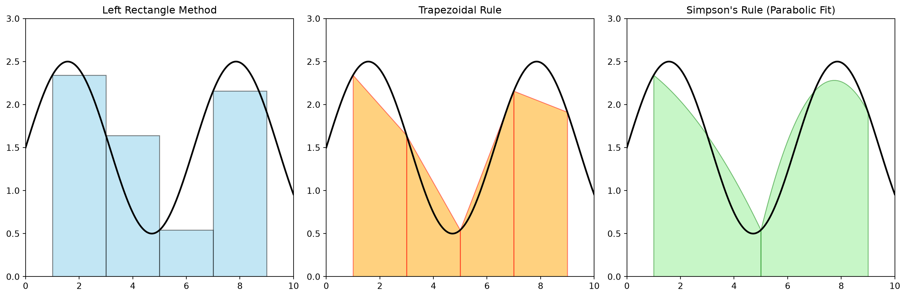

import numpy as np
import matplotlib.pyplot as plt
def f(x): return np.sin(x) + 1.5
x = np.linspace(0, 10, 200)
y = f(x)
a, b = 1, 9
n = 4
x_trap = np.linspace(a, b, n+1)
y_trap = f(x_trap)
plt.figure(figsize=(15, 5))
# 1. Left Rectangle
plt.subplot(1, 3, 1)
plt.plot(x, y, 'k-', lw=2)
for i in range(n):
plt.gca().add_patch(plt.Rectangle((x_trap[i], 0), x_trap[i+1]-x_trap[i], y_trap[i],
facecolor='skyblue', edgecolor='black', alpha=0.5))
plt.title("Left Rectangle Method")
plt.xlim(0, 10); plt.ylim(0, 3)
# 2. Trapezoidal
plt.subplot(1, 3, 2)
plt.plot(x, y, 'k-', lw=2)
for i in range(n):
plt.fill_between([x_trap[i], x_trap[i+1]], [0, 0], [y_trap[i], y_trap[i+1]],
color='orange', edgecolor='red', alpha=0.5)
plt.title("Trapezoidal Rule")
plt.xlim(0, 10); plt.ylim(0, 3)
# 3. Simpson's (Parabolas)
plt.subplot(1, 3, 3)
plt.plot(x, y, 'k-', lw=2)
x_simp = np.linspace(a, b, 2) # n=2 for visual simplicity
for i in range(0, len(x_trap)-2, 2):
xs = np.linspace(x_trap[i], x_trap[i+2], 50)
coeffs = np.polyfit([x_trap[i], x_trap[i+1], x_trap[i+2]],
[y_trap[i], y_trap[i+1], y_trap[i+2]], 2)
ys = np.polyval(coeffs, xs)
plt.fill_between(xs, 0, ys, color='lightgreen', edgecolor='green', alpha=0.5)
plt.title("Simpson's Rule (Parabolic Fit)")
plt.xlim(0, 10); plt.ylim(0, 3)
plt.tight_layout()
plt.show()